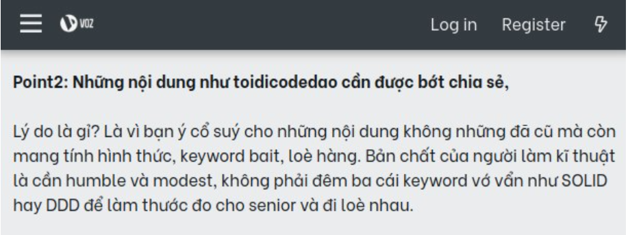

Trang chủ
Ngành công nghiệp outsource rẻ tiền, blog code dạo dở òm?
Xung quanh bài viết: “Nghĩ về tình hình dev Việt buồn quá” trên voz, xin được copy nguyên văn: “A/e thì toàn đi làm mấy cty outsource rẻ tiền. Nội dung trên mạng được xem nhiều cũng toàn nội dung rẻ tiền như code dạo. CNTT Việt Nam đến ngày tàn rồi các bác ạ.”
CNTT Việt Nam đến ngày tàn rồi các bác ạ.
Không biết các bạn thấy thế nào chứ mình thì thấy rằng CNTT Việt Nam đang đi lên chứ, sinh viên theo học ngày càng đông, nhận thức xã hội về ngành CNTT ngày một cao, chất lượng đào tạo càng ngày càng tốt, dự án nhiều, lương cao lên. Bạn nói rằng chất lượng lập trình viên Việt chưa cao bằng thế giới thì còn được chứ bảo CNTT đến ngày tàn thì nghe như tận thế đến nơi.
Ngành công nghiệp Outsource rẻ tiền:
Làm outsource hay product là lựa chọn của mỗi người thôi, mỗi mảng có một đặc thù, điểm tốt điểm xấu riêng tùy từng cty. Cũng có cty this cty that chứ không thể nói outsource hơn hay product hơn được. Outsource cũng tốt, nhìn chung lương cao hơn, bán chất xám lấy tiền của nước ngoài, không tốn rừng vàng biển bạc gì, phát triển đất nước dựa vào điểm mạnh của tri thức Việt là tốt chứ.
Nói chung là không nên phê phán, đó là lựa chọn của mỗi người, thấy phù hợp thì họ làm, không phù hợp thì họ nghỉ. Miễn công việc đó không phạm pháp, nuôi được bản thân và vợ con của họ. Mỗi người có một mục tiêu khác nhau trong cuộc sống, có người thích làm công việc pro, có người thích làm công việc vừa phải để còn thời gian quan tâm đến những điều khác trong cuộc sống, chứ code không phải là tất cả trong cuộc đời của họ.
Nội dung trên mạng được xem nhiều cũng toàn nội dung rẻ tiền như code dạo.
Mình thấy chủ thớt quá cực đoan. Mỗi blog, kênh youtube hướng đến một đối tượng người xem khác nhau. Blog code dạo hay những bài viết của tôi hướng đến những bạn trẻ, có thể họ không bằng chủ thớt nên cách nhìn của họ khác. Những blog “rẻ tiền” như code dạo phục vụ một đối tượng nhất định, mang lại định hướng, niềm đam mê với nghề cho người đọc thì cũng tốt chứ sao.
Có thể các bạn thấy mình thường chế ảnh hoặc làm clip code vài cái game vui vui mà cho rằng tôi rảnh rỗi, xin thưa rằng mỗi bài đăng đều trong kế hoạch phát triển nội dung cả. Tôi không làm cái gì vô nghĩa, không công đâu.
Về vấn đề nội dung “rẻ tiền”:
Ông cứ ra chợ, hay lên Shopee đi, có người chủ trương bán đắt, chất lượng, có người lại chủ trương bán rẻ, số lượng nhiều. Những bài viết chuyên sâu thì lượng người quan tâm không nhiều. Một video chém gió về “cách Google phục vụ hàng triệu người dùng” sẽ được xem hơn là “Cấu hình load balancing bằng Nginx”, những video kiểu đó tôi làm rồi tôi biết.
Chính tác giả blog, chủ kênh video cũng có những mục tiêu khác nhau, bạn xem không thấy hữu ích không có nghĩa rằng người khác cũng không thấy hữu ích như bạn. Miễn rằng, song song với những video giải trí, vẫn có những nội dung hữu ích với người xem là được.
Còn ai muốn những kiến thức nâng cao ấy hả, vâng, trả tiền đi, tôi và các blogger khác sẵn sàng nhận làm mentor với chi phí không rẻ. Chính tôi đã mentor cho vài bạn, những thứ đó tôi không sẵn sàng bỏ công sức viết lên blog chỉ để cho vài người đọc. Dưới vai trò một người viết, một người làm video, thì mục tiêu của họ là càng nhiều người xem càng tốt.
Việc lựa chọn “cái gì để đọc, cái gì để xem” là tùy vào từng khán giả, không phải ai cũng đủ pro để đọc những nội dung pro, miễn là họ cảm thấy có ích cho bản thân họ. Thì những blog “rẻ tiền” cũng đã đóng góp cho sự phát triển của CNTT nước nhà rồi.